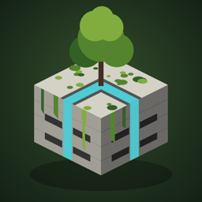

Rewilded
A calm concrete puzzle for iPhone.
What it is
Each block is a concrete plaza cut with dry channels. Turn the slabs so water runs from the cistern to every one of them, and the block comes back to life: moss spreads, trees take root, and the grey light warms to gold. Every block you finish stays green behind you as the city grows.
How to play
- Tap a slab to turn it a quarter turn.
- Connect the round cistern to every slab to finish the block.
- Drag to look around, pinch to zoom, slide with two fingers to move the view.
- Finish at or under par to earn three leaves.
- The trophy button opens the Game Center leaderboard; the speaker button mutes the music.
Purchases
Blocks 1–10 are free. A one-time purchase, Endless Blocks, unlocks every block after that. If you bought it before, on this or another device, tap Restore Purchase on the unlock screen. Refunds are handled by Apple at reportaproblem.apple.com.
Support
Found a bug or have an idea? Email alvo.ipad.home@icloud.com. Please include your iPhone model, iOS version and the block number.